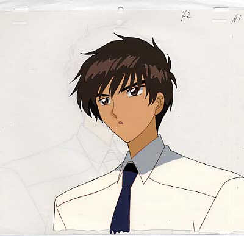

名字:
熊彼得
性别:男

介绍:生活中的故事
问题
答案
新建于:2015-06-28 04:13:45 AM，更新于2016-04-12 03:03:54 AM
Pre上一页
Next下一页
跳页:
正文: 能啊，我旅行到深圳当时我只是一个高中生。爸爸想看看我生存能力怎么样，就断了我的银行卡。我在那里的救济所住了一夜，就改变了了。我见到了人间疾苦，那是对一个人生最大痛苦就是失恋的高三男生，深刻的触动，与打击，背面被打破的建筑物玻璃，前面是对阵一样的对阵求助者。断肢，电视，疯人，弱智，流浪儿，哭哭笑笑的人，我把全部的衣服都穿在自己的身上，睡觉。
还是会被巨大的排气扇吵醒，醒来云贵流浪儿对我笑。
你们不明白那种恐惧的，监视器，哭着告诉我自己人生经历的叔叔。我当年18岁。
我明白了，失恋是对我的最大打击，可这并不算什么。
大二我展开了旅行，一路向南方，郑州合肥，黄山，九华山，南京，本来是要到上海的，可是我直接北京了，因为经费的问题。每一座城市都有我的故事。
刚上火车遇到阿姨讲自己孩子爱学习不喜欢女生。我据理反驳了她不要以此为傲。有看不到的危险在等着你。
后来给一对老夫妻让座，在黄山我们又碰到了彼此。
在合肥逍遥津，那是一个水上公园，我看着水，给好朋友打了一个电话，我说咱们不上学了吧，来合肥养猪吧，我好喜欢这座城市，旁边的孩子说他老师和我一所大学毕业的，于是好崇敬我，问我要不要去他们学校当老师，我就一直笑，打的到明珠广场，站在天桥上，我谁也不爱，想起金谷园的故事。
当时我从小到大都没有赚过一分钱，我想赚钱，我喜欢合肥，我想在这里赚钱，于是找了份报纸的工作。白干了七天，通知了之后走掉了。花掉我好多钱。还是一分钱都没有赚到。但是我看到了好多柳树，雨后的阳光。
后来坐上火车，我去了黄山，遇到了一个学姐，武汉大学的，看日落的时候，她送我的苹果，半夜的时候，我们去爬光明顶跑错山峰了，就是黄山的深夜，很冷的，风很大。实在是太冷了，她抱着我，我亲了她。第二天我们就分开了。
她说我把自己裹藏得太深了，自己都找不到自己了，想一想确实，染着小红毛的我当时正被人追杀，噩梦连连，却假装无碍。
我喜欢学姐身上的香味。
下山的时候，我依旧坐缆车，在山下分别后，我15块钱零钱，没有车愿意载我。我要走回屯溪，一路上都是竹林，高山，河流，爱上青翠，挺拔的山林了。
后来我就取了钱迷了路。
遇到老司机花了大笔钱回去了。但是我还是很开心。
回去之后和伦敦小女孩聊天，那口伦敦市民的口音真是艳煞我了，12岁出来玩的，带着13岁的姐姐。后来加入了一个美国摄影师，我们就继续聊天。带着摄影师吃拉面，吃米饭，喝绿茶，我还写了一个好男孩的字条留给他。教他中国话。
我帮他杀价一路杀到九华山。之后我们分离了。
后来去南京，本来不是为了逝去的感情，后来也渐渐融入了情绪，果然就像新海诚的电影，我在地铁里看手机，写下了对她想说的话，最后全部删除。我哪里都没去，我只想让这座城市的人们看看我，我在这里，更多的人里也许有你呢。
还在南京打了两周工，没要钱，免费代小孩子英语。
后来回去了，我继续上学，觉得人生就这样也可以。
——————————————————————
补去兰州的旅行。
去兰州是我大学一年级的时候，坐上火车17个小时的旅途，树越来越少，石块越来越多，华山，窑洞，黄沙，高原，火车追逐着太阳，一路向西，我终于看到了符合我心境的景观，荒漠里的一棵树。
在兰州人们向我诉说着想象中的冷清是什么样子，乌鲁木齐是十个兰州那么大的城市，人口却是兰州的十分之一。
中山桥的落日沉入黄河，松软的黄河滩，看着河水绵长，我想不要说我爱你吧，因为这三个字，挺煞风景的。兰大的校史馆的兰州象骨架，我看到过去的这里是一片热带，人类的历史从这里开始的。天水伏羲，西王母，曾经的人类在这里分道扬镳。
我去了西北民族大学的体育馆，据说国家拨款好多钱建造的鸟巢，我还去了西北师大，那里环境挺好的，朋友在那里学俄语。
去了西宁，青海湖，我虽然这辈子没见过海，但见过青海湖的人肯定比见过海的人少。所以我还是很骄傲的，路上的耗牛，马匹，背心长发的精壮男人，都是我将要成为的人。
旅行使我得到更多支持生存的证据，获得生活的元素，打开了我的世界，我不爱去人多的地方，就喜欢去小地方走走，以前骑着小摩托在旋转的山上，看见路两侧的树向后退，我从这片云下到那一片云下，遇到河流去翻石头盖，看看石头下趴着的是什么，麻虾，小螃蟹？我都喜欢。
玩到夜里了，看到华北平原最孤独的路灯，如果看到两盏，我就大喊：谢谢你陪伴着最孤独的路灯。
看到三盏，我就会说：一家人你们好！看到四盏，就大声说：你们并不孤独～!
毕竟我是个男人，我喜欢山野的味道，我喜欢山林里是比城里楼房还高的杨树，龙猫里的那首：风之甬道。写的就是从遥远的森林里来的风，从两排树中间吹来，那就是风之甬道啊！
旅行真的没有意义么，我们所见所闻真的没有意义么，我在闲暇的旅途中对自己人生的务虚真的没有价值么，
美好风景带给我的舒畅，麦田的水珠在风中飘来，滋润着额头脸颊，没有月亮的夜晚，车熄火在麦田里的，看星空如木炭飘碎，闪闪烁烁。
不只是美的感受，更是对自我人生经历达成的和解，抬头仰望，跪叹星空，我已从地球上所有的角落消逝。
Pre上一页
Next下一页
跳页: